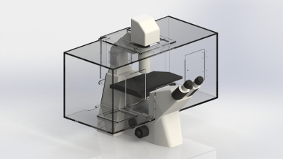
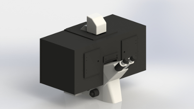
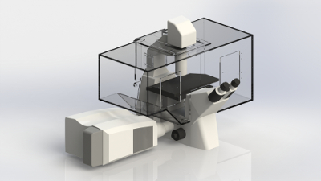
Zeiss Inverted Microscope Chamber Systems
Digital Pixel design and manufacture a range of chamber systems for Zeiss inverted microscopes. Our vibration free heater systems provide the ultimate
in system thermal homogeneity and stability. Systems are available for use with the Zeiss wide field, as well as the Zeiss 780 and 880 Confocal systems.
The system stability of the Elyra Super Resolution Microscope can be enhanced by using our heaters to gently warm the system to 22 oC.
SuperSealTM System
Designed for researchers at the University of Heidelberg, the application demanded that full access to a multi well dish was required,
in order to add a drug when certain points in the cell cycle were reached. However full CO2 control in the sample area is essential to
maintaining cell viability. Our unique Enhanced Sealing Technology provides CO2 control within the whole chamber.
Great Ergonomics
The top of the chamber is directly connected to the transmitted light column of the Zeiss inverted systems, so getting access to the
sample area is simple and easy. Removable panels provide easy access to cameras and other peripherals. The chamber is directly
supported on the microscope, thus providing uninterrupted clear space around the microscope for system peripherals, beam splitters,
multiple camera configurations etc.
Extended Temperature Range - Great Thermal Homogeneity
Our advanced heater technology removes conventional system limitations, by providing temperature control even close to ambient temperature. This makes the
system ideal for multiple applications including Xenopus, Zebrafish and Drosophila studies, and of course mammalian studies. Our dual heater systems gently
warm your sample area from both sides reducing and eliminating thermal gradients.
Thermal Control for Enhanced System Stability
The extended temperature range of Digital Pixel heater systems allows them to be used to stabilise
microscope systems such as the Elyra Super Resolution Microscope can be enhanced by using our
heaters to by gently warming the system to 220C.
Multiple System Configurations
Systems are available in either matt black (MB), clear(CL) or MB/CL which is matt black with a clear
front and blackout curtain. Zeiss systems are also available with our SuperSeal option (SUPSEAL).
Supported Microscopes
Zeiss 200M
Observer Range
LSM 800/880 Elyra
Please enquire about other microscope types.
Chamber and Heater Thermal Specifications
Temperature Range Ambient +1 oC to 42 oC
Temperature Stability ± 0.3 oC
Temperature Homogeneity ± 0.3 oC across the XY axis of a motorised stage system.
All measurements depend on the precise microscope and chamber configuration, but are typical.
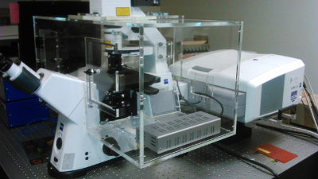
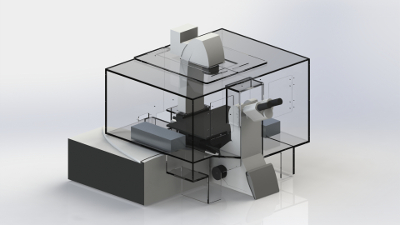
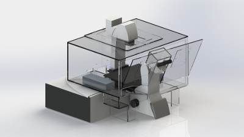
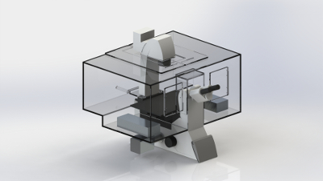
Leica Inverted Microscope Chamber Systems
Digital Pixel support both the current Leica DMi8 as well as the DMI6000 range of inverted microscopes in wide field as well as
configurations compatible with the Leica SP5 and SP8 confocal systems.
Leica DMi8 Chamber Variants
We have developed three designs based on customer requirements for the DMi8 microscope.Two of our designs go to the optical table,
one is mounted directly onto the microscope.
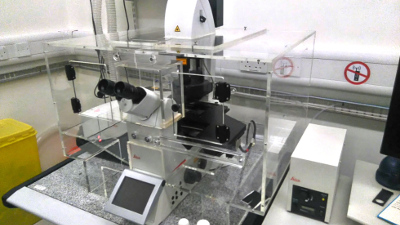
Of the two designs that are table mounted, one is designed to allow the researcher greater access to the microscope
by removing the main front panel of the chamber. This is typically used in Super Resolution configurations. These systems have been
designed to allow full access to the microscope controls without having to move any silicon flaps or open any doors, through
the use of an internal panel.
The microscope mounted system is normally used either for wide field or spinning disk systems.
Here the emphasis is on keeping clear space around the base of the microscope for peripherals such as cameras, beam splitters etc.
The Digital Pixel Solution is mounted directly on the microscope, and does not require support poles. Combined with our internal heater
technology this approach is the easiest to install system on the market.
Multiple System Configurations
The three system confugurations are available in either matt black (MB), clear(CL) or MB/CL which is matt black with a clear
front and blackout curtain.
Supported Microscopes
Leica Dmi8
Leica DMi6000
SP5 SP8 Confocal Scanning Heads
Spinning disk configurations
Chamber and Heater Thermal Specifications
Temperature Range Ambient +1 oC to 42 oC
Temperature Stability ± 0.3 oC
Temperature Homogeneity ± 0.3 oC across the XY axis of a motorised stage system.
All measurements depend on the precise microscope and chamber configuration, but are typical.
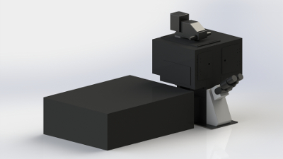
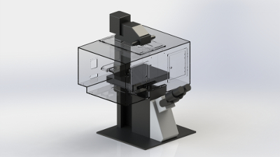
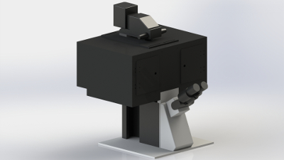
Olympus Inverted Microscope Chamber Systems IX81, IX73 and IX83
Digital Pixel have designed and supplied chamber system onto several ranges of Olympus microscopes. This includes the Olympus TIRF system
as well as Super Resolution systems based on the Olympus platform such as the Abberior STED Microscope.
Our design is mounted on the microscope to provide full access to the removable optical components on the microscope chassis.
Our designs are compatible with both the single and double layer variants of the new Olympus inverted microscope range
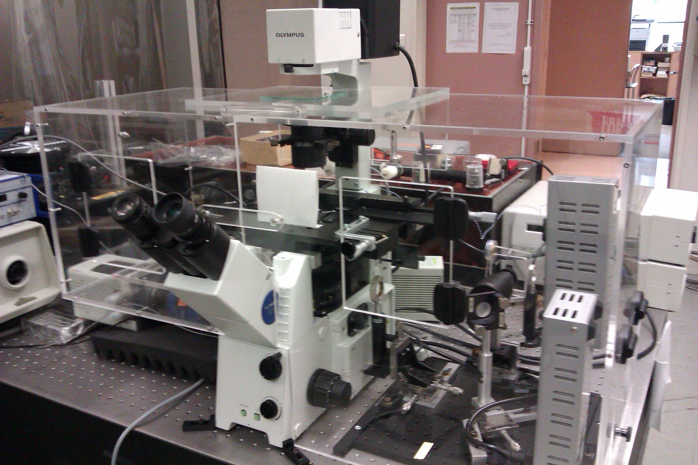
Multiple System Configurations
Systems are available in either matt black (MB), clear(CL) or MB/CL which is matt black with a clear
front and blackout curtain. Chamber configurations are available for both the IX73, and Ix83 with either
one optical train (1TR) or two optical trains (2TR).
Supported Microscopes
Olympus IX71 IX81
Olympus IX73 IX83
Chamber and Heater Thermal Specifications
Temperature Range Ambient +1 oC to 42 oC
Temperature Stability ± 0.3 oC
Temperature Homogeneity ± 0.3 oC across the XY axis of a motorised stage system.
All measurements depend on the precise microscope and chamber configuration, but are typical.
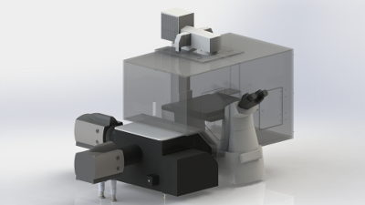
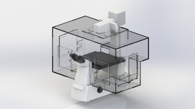
Nikon Inverted Microscope Chamber Systems Ti-E single and double layer
The Nikon TI-E microscope is available as a single or double layer microscope. Digital Pixel chambers are available for both of these systems.
We have also designed systems for use with the TI-E when combined with either the Nikon A1 Confocal, or Yokogawa Spinning Disk systems
from Visitron, Andor or Perkin Elmer.
All of our designs provide excellent access to the microscope. Chambers are available in either clear, mast black, shaded or mixed, with matt back to all sides of the chamber apart from the front, which is clear. The latter systems are available with internal LED illumination.
Supported Microscopes
Nikon TI-E with one (1L) or two optical layers (2L)
Nikon TI-E with Nikon A1 Confocal System
Nikon Ti-E with Andor Yokogawa Scanning Head
Nikon TE2000
Chamber and Heater Thermal Specifications
Temperature Range Ambient +1 oC to 42 oC
Temperature Stability ± 0.3 oC
Temperature Homogeneity ± 0.3 oC across the XY axis of a motorised stage system.
All measurements depend on the precise microscope and chamber configuration, but are typical.
Digital Pixel have designed bespoke chamber systems compatible with a range of third party microscope equipment and microscope systems.
Below is a list of some of the systems we have supported.
Andor Spinning Disk System
Digital Pixel have designed chamber upgrades to accommodate the new Andor CSU-11 spinning disk head
Perkin Elmer Spinning Disk System
Compatible with the various Perkin Elmer systems out chambers, provide easy access to the scanning head and system peripeherals.
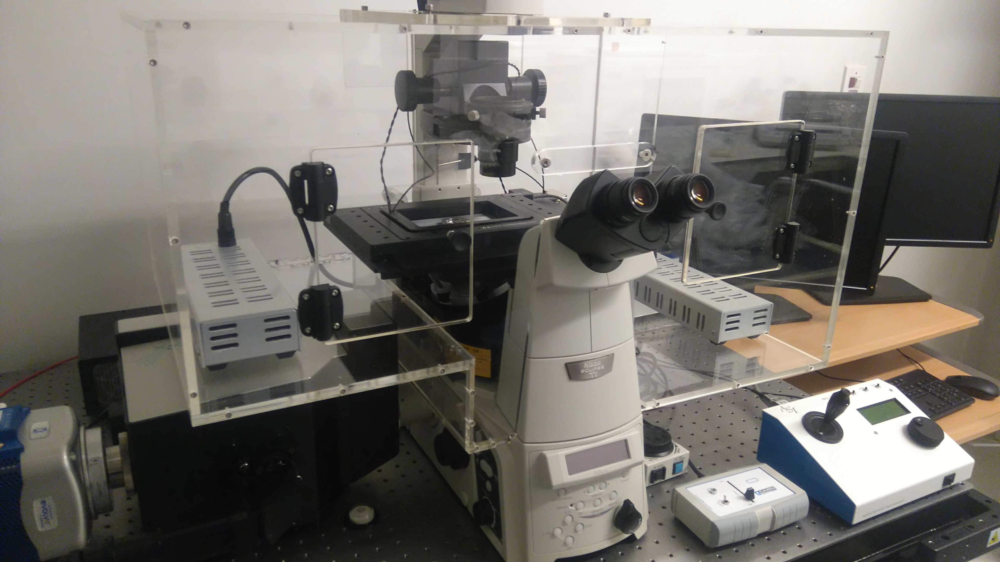
Crest Spinning Disk System
The latest addition to our range our CREST spinning disk chamber is microscope mounted proving great access to system components.
Witec Raman and AFM Microscope
Combines an Upright and Inverted microscope system on the same chassis. These systems are sometimes combined with AFM systems our
vibration free heater systems are invaluable in this application area.
Abberior STED Microscope System
Digital Pixel have designed a vibration free chamber system for this system using an Olympus IX83 as the microscope platform.
The chamber allows the user to access the STED optics for system adjustment without having to remove the chamber.
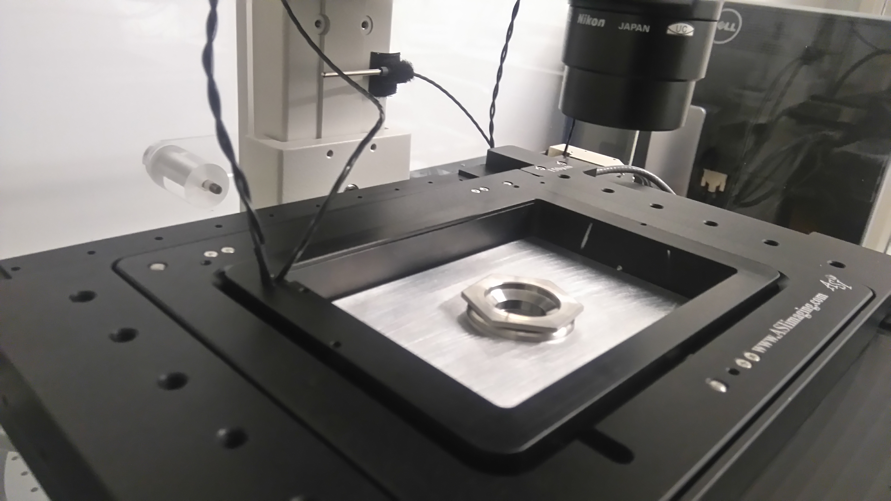
Stage Top Heater Solutions
All systems include independent temperature control over the insert and the glass top of the insert,
and are sealed to maintain gas control. Combination systems are available with CO2 and CO2 -O2 controllers.
Systems normally accept a 3mm OD flexible tube for gas delivery- other options are available.
Open Heated Inserts
Designed for applications such as patch clamp or perfusion studies where access to the sample is essential,
this system boasts a dual temperature control configuration. It controls the temperature of the heated insert,
and optionally controls the temperature of media entering the sample area.
Intravital Microscopy Imaging System
Designed for whole animal viability during extended imaging experiments the system boasts two independent temperature
control channels. The first controls a heated insert, the second a heated blanket. Combined with a third independent temperature
monitoring system, this solution has been shown time and time again to provide the best results. Compatible with a wide range of
motorised microscopes, this system is used on many two-photon experimental systems.
A removable insert in the heating assembly, and titanium windows completes the system solution.
CO2 Gas Controller Systems
A wide variety of cell systems, require a closely controlled CO2 concentration to maintain cell viability over extended periods.
While it is possible to use 5% CO2 cylinders, these are expensive, bulky and provide limited flexibility in terms of the CO2 concentration range possible.
Put simply 5% CO2 concentration at the cylinder does not guarantee the optimum outcome for your cells.
Furthermore the use of flow based mixing systems, while a little less expensive provide far from consistent gas concentrations.
There are three options in the Digital Pixel range of CO2 controllers, designed to meet the needs of a single microscope system, or those of a Core Microscope Facility, and finally for use with our SuperSealTM enhanced sealed chamber system. System installation is easy.
Digital Pixel CO2 controllers only require 100% CO2. Additional gas supplies such as air or N2 are not necessary.
DP_2000_CO2_CORE
This system is designed to meet the CO2 requirements of several microscope systems. It has an enhanced pumping system, and is supplied with 6mm OD tubing and flow controllers to supply up to three microscopes, provided the total flow distance is less than 15 meters. The flow rate can be controlled internally over four flow setting using a simple rate dial. The easy to use front panel shows the CO2 CONC SET, and the CO2 CONC ACTUAL. The range of the system is 0.1-20%.DP_2000_CO2_STD
Designed to meet the CO2 requirements of a single microscope system, it features a long life internal pump. Again the flow Rate can be controlled, with four flow setting including OFF without turning the controller OFF. This feature means you can be ready to go at any time. Again the CO2 concentration range is 0.1-20%. Optionally Relative Humidity Monitoring and control is also possible.DP_2000_CO2_SUPSEAL
This system is designed to control the CO2 concentration within a whole chamber. It must be used in conjunction with one of our SuperSealTM Chamber Systems. In this configuration CO2 is delivered directly into the sample area. CO2 concentration is measured close to the sample are. These systems are designed for applications requiring complete access to the sample, for example for the addition of a drug or other perturbing material during a time lapse experiment.DP_2000_CO2_O2_SINGLE
Designed for hypoxia studies, this system measures CO2 and O2 concentration within the sample area. Microprocessor based technology maintains CO2 concentration in the range 0-8% range is 0.1-20% and O2 concentration in the range 21% to 1.0%. Direct measurement in the sample area provides clear and obvious benefits over measuring gas concentrations at a distance.Features-
- High Performance NIRD CO2 detector used to monitor concentration.
- Long life pump provides excellent gas delivery.
- Microprocessor controlled concentration levels- No Guess work
- Only 100% CO2 gas supply required for full operation- No O2 or N2 required.
Sealed Inserts
As part of our gas controller range we have also designed a range of sealed inserts for industry standard motorised stages. Normal inserts are open and as a result cannot maintain when a desired CO2 concentration in the sample area.
Digital Pixel Sealed Inserts are designed to maintain CO2 concentration at the sample.
Gas is introduced through a push/pull 3mm OD flexible tube fitting. This provides easy connectivity while minimising any
tubing drag on the stage. A clear glass lid allows easy access to the sample. Our inserts accept multi well dishes, as well as slides and Petri dishes.
Is Vibration Free Operation Really So Important?
Is Vibration Free Operation Really So Important?
Well an increasing number of scientists think so. Their experiments really demand it. For more demanding techniques,
such as Super Resolution Microscopy, electrophysiology, tweezer experiments or simply using a x60 or x100 objective-
the removal of this complication has obvious advantages!
On the other hand, in any kind of microscopy, it is really one less thing to worry about with numerous side benefits.
Better Focus Stability
Most fan based systems warm the sample area by blowing warm air into the environmental chamber- once the system detects a
drop in temperature. This method is a second order control mechanism relying on the system making an educated guess as to
the power requirements of the heater, and then has to factor in the rate of air flow in the system. This leads to well documented oscillations in the temperature at the sample, which can result in reduced cell viability as well as increased focus drift.
Digital Pixel Heaters, on the other hand, gently warm the sample area from both sides and as a result reach a steady state
equilibrium with a steady flow of heat into the sample area. The result better microscope stability- less focus drift!
How can I be sure that the temperature across my 96 well dish is constant?
The only way that we can think of is by gently warming the sample area from both sides, across the width of the sample area.
Digital Pixel achieve this by using multiple heaters. In tests, the temperature measured from one edge of a typical 96 or 24 well dish is constant to within the accuracy of a P100 sensor! If you blow hot air across a sample area- the physics of the situation lead to thermal gradients across the sample area.
Wider Temperature Range- Is it Important?
Most Microscope Heater systems can only provide any thermal accuracy when the required temperature is 4-6oC above the ambient temperature. There is a minimum amount of heat that they can put into the system. Digital Pixel Heater systems confidently cope with
anything from 1oC above ambient to up to 50oC depending on the system configuration. This allows a wider range of samples to be studied- especially important when you have invested heavily in the latest microscope technology. Especially important for Core Facilities.
Reliability Really Is Important!
Digital Pixel Heater Systems have no moving parts- no fans to break down – no air filters to replace.
As a result, our new Gen II systems have in excess of 80 equipment years in the field without a systems failure - not one has broken down!
This means much less down time on your time lapse system.
Cleaner Sample Environment
The introduction of external air that is then warmed before entering the chamber –takes dirty air from outside the microscope environment- your samples are being constantly bombarded by possible contaminants. Our heating technology reduces the chances of sample contamination.
Summary
- Vibration Free Operation- No fans required- Better Reliability
- Internal Heaters – Reduced Sample Contamination- Reduced Optical Contamination
- Dual Heaters – Reduced Temperature Gradients Enhanced Homogeneity Across the Sample
- Wider Temperature Range- Ambient through to 45oC- Wider Range of Samples Not Possible with other Systems.
- Small Equipment Footprint- No Messy Tubes or Pipes
- Large Area Chambers Available